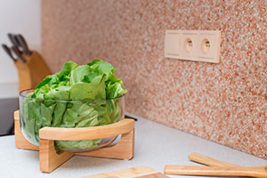
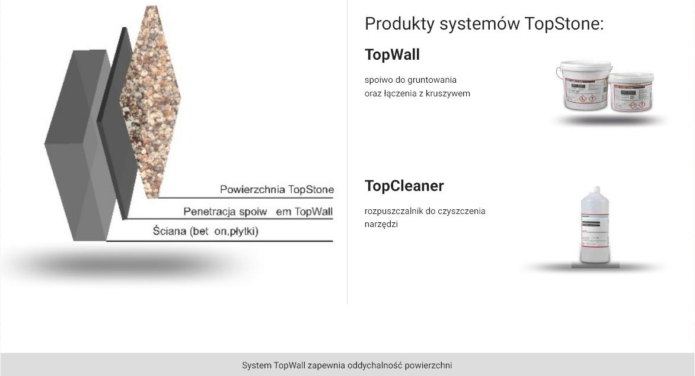
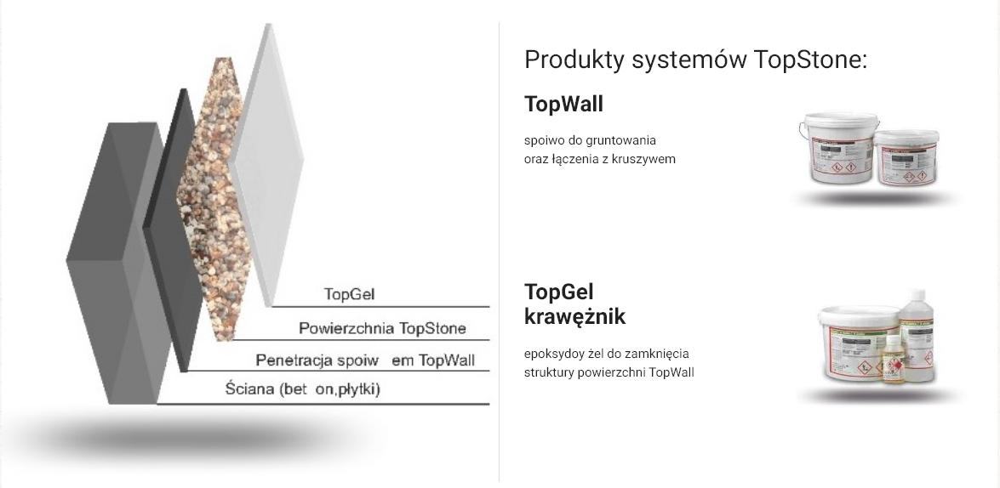
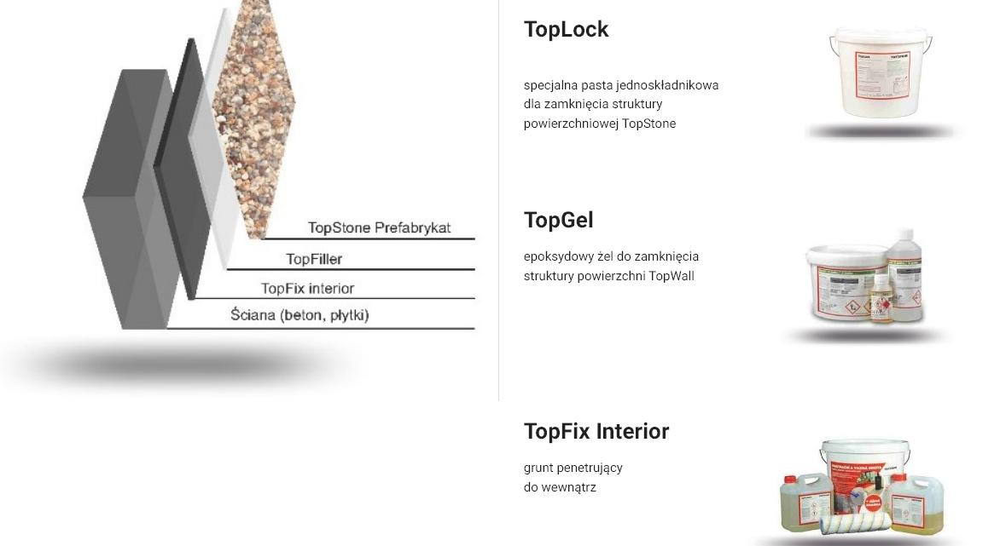
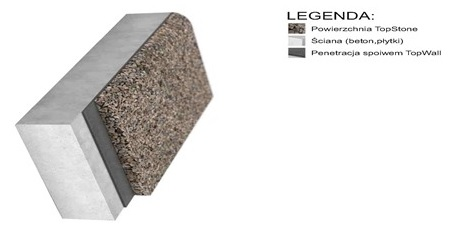
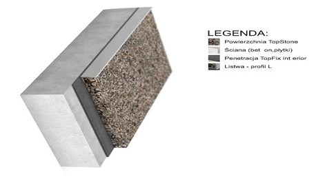

System TopWall wykorzystywany jest do wykonywania efektownych powierzchni pionowych zarówno wewnątrz jak i na zewnątrz budynków. Największym atutem sustemu TopWall jest realizacja wykonywana bez szalowania. Można wykonywać efektowne wstawki kolorystyczne miejscowo jak i również np. całe ściany zarówno z jednego rodzaju kruszywa jak również poprzez łączenie wielu kolorów. Powierzchnia wykonana systemem TopWall jest oryginalna i niepowtarzalna. Unikatowym rozwiązaniem jest wykonanie różnego rodzaju motywów graficznych lub napisów. System ten można wykonać w wariancie otwartej struktury (w miejscach nie narażonych na wilgoć), jak również w wariancie zamkniętej struktury (w miejscach narażonych na działanie wilgoci). Rodzaje podłoża: beton, płytki, kamień
- powierzchnia paroprzepuszczalna
- 2w1 gruntowanie jest częścią spiwa
-powierzchnie pionowe
-detale na ścianch
-ścianki, murki, cokoły i inne

- Wysoka odporność
-2w1 gruntowanie jest częścią spiwa. Trwała odporność na wysolenia i zabrudzenia
-Kuchnie, łazienki
-Magazyny, garaże
-Korytarze, miejsca publiczne

- Do użytku wewnątrz i na zewnątrz
- Odporność na wysolenia i zabrudzenia
-Kuchnie, łazienki
-Magazyny, garaże
-Korytarze, miejsca publiczne


Należy stopniowo zmniejszać grubość warstwy i krawędź zaokrąglić Zastosowanie: kuchnie, prysznice, schody, ściany, słupy
ZastosowanieL kuchnie, prysznice, schody, ściany, słupy Poprzez takie rozwiązanie uzyskuje się idealnie prostą idealną krawędź

Zastosowanie: chodniki, baseny, tarasy, schody. Zastosowanie listew umożliwia łączenie na pionowych powierzchniach innych materiałów, uzyskuje się elegancki wygląd a także dzięki listwom kształtującym możliwe jest uzyskanie krawędzi o różnym kształcie